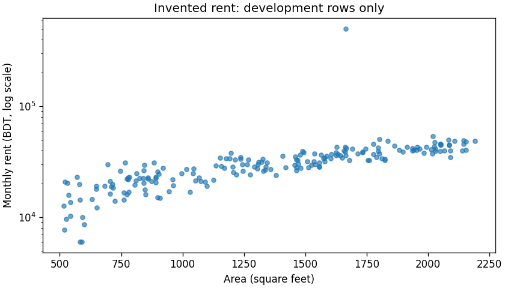

Mina's aunt brings a card describing a flat in Mirpur. It lists area, rooms, floor and distance from a city reference point. Tuktuk offers a rent estimate. Nana asks what examples taught it, how often it misses and whether a family should trust that one number.
Build a complete monthly-rent regression workflow, from inspection to a new-flat prediction. The records are invented. They help you practise a defensible process, but they do not establish current Dhaka rental prices.
Set aside about ninety minutes. Keep notes about data units, model choices and limitations. The final product is a short report supported by held-out predictions, not merely a fitted Python object.
The target is rent_bdt, measured in BDT per month. Inputs are area_sqft, rooms, floor, distance_km and district. Treat distance as the documented distance from the dataset's reference point; do not silently reinterpret it as distance to every family's workplace.
The estimate is intended to demonstrate planning arithmetic. It is not a housing valuation or a fair-rent decision. Real applications would need current listings, collection dates, coverage checks and additional quality measures.
| Field | Meaning | Preparation |
|---|---|---|
| area_sqft | Floor area in square feet | Training median and scaling |
| rooms | Room count | Check positive count; scale |
| floor | Floor number | Training median and scaling |
| distance_km | Distance in kilometres | Training median and scaling |
| district | One of five area names | Mode filling and one-hot encoding |
| rent_bdt | Monthly rent | Target, excluded from features |
The 250 rows include six missing feature cells and one rent of 500000 BDT. Four districts have fifty named rows each, while Dhanmondi has forty-nine and one district cell is blank. Keep the unusual rent visible while investigating its provenance. A large target alone is not a documented reason to delete a row.
Begin EDA with questions: how does area relate to rent, do district ranges overlap, and where are the missing cells? Use the scatter and distribution methods from exploratory data analysis. Structural inspection can establish units and field validity; any transformations learned from distributions must fit development or training rows as appropriate.
The inspection program prints row counts, missingness and district counts. It records the rent range without making a target-based trimming choice. Write those facts in your notes so the eventual score has context.
Reserve the final-test rows before looking for modelling patterns. This program plots only development records, with a logarithmic rent axis so one large value does not hide the rest. It also reports district medians as descriptive summaries; those do not prove a causal district effect.

A seeded split creates 200 development and 50 final test rows. Splitting development again creates 150 training and 50 validation rows. The random-row design is suitable for this exercise. Future listings or repeated buildings would require chronological or grouped evaluation.
The numeric branch fills missing measurements with training medians, scales columns, then constructs polynomial features. The categorical branch fills a missing district with the training mode and creates one-hot indicators. ColumnTransformer joins both branches.
The categorical encoder ignores unseen names by returning zeros for that branch. Transformation can then complete, but the model has no learned district-specific evidence for that new name. Flag that unsupported case in any actual user-facing application.
Degree 1 keeps original numeric columns. Degree 2 adds squares and interactions among numeric columns, while district stays one-hot encoded. Both use LinearRegression. The same training and validation partitions make their MAE comparison meaningful.
The validation result favours degree 1: about 8319 BDT MAE versus 11441 BDT for degree 2. Choose using that comparison. Do not peek at the final test to reverse the choice.
Once the degree is fixed, refit its complete pipeline on all 200 development rows. Fit DummyRegressor with strategy mean on those same development targets. Evaluate each predictor on the fifty untouched test rows.
The predict_flat function constructs a named single-row table in the original feature order. It rejects nonpositive area, fewer than one room, negative floors and negative distances. Those checks express this exercise's input domain; real basements or special units would need a revised domain definition.
The example supplies area 1000 square feet, three rooms, floor two, distance five kilometres and district Mirpur. Its estimate rounds to 19975 BDT per month. This is a point estimate from the invented dataset, with no automatic confidence or prediction interval.
| Predictor | MAE BDT/month | RMSE BDT/month |
|---|---|---|
| Development-mean baseline | 10208.880 | 11874.776 |
| Validation-selected degree 1 | 8370.371 | 10485.208 |
The selected model improves both reported metrics on this split. That does not mean every prediction improves or that every district has equal error. RMSE being larger than MAE is consistent with some larger residuals receiving extra influence.
A short report should describe the synthetic 250-row source, target unit, split sizes, preparation, validation choice and final baseline comparison. State that the high-rent row remains and that missing values are imputed within each fit. Include the new-flat estimate as an illustration, not evidence of market accuracy.
Add a residual-versus-predicted plot and a district-level error table when extending the analysis. Use development data to decide how to improve the workflow. If final-test inspection motivates more changes, that test becomes development evidence and a fresh final evaluation is needed.
Collect real data only with a clear purpose and appropriate permission. Document dates, neighbourhood coverage, listing versus agreed rent and whether several rows describe the same building. A random split can look strong when nearly duplicate flats appear on both sides.
Ask what the family needs from a prediction. A budget decision may care more about overestimation or underestimation in one price band than a single city-wide average. Relevant error costs and coverage should guide future evaluation.
Review privacy before retaining exact addresses or contact details. These fields are unnecessary for this exercise and are absent from the invented data. A model can support a conversation while leaving the final housing decision with the people affected.
Consolidate the numerical skills in the regression practice sheet.